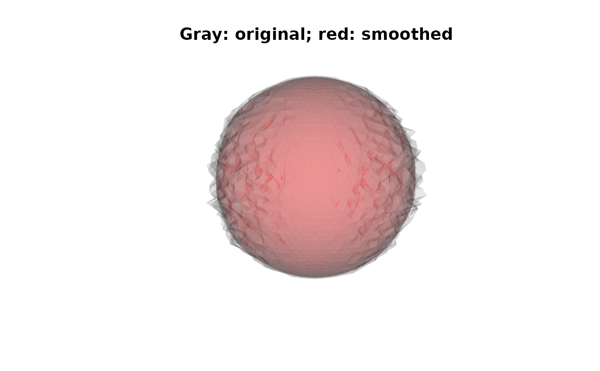

Smooths a closed triangular surface mesh by repeatedly replacing each vertex with the average of itself and its immediate neighbors (Laplacian/neighbor-averaging smoothing), optionally rescaling the surface back to its original area afterwards.
Arguments
- mesh
triangular mesh of class
'mesh3d'. Must be closed, manifold, and genus-0 (watertight, no boundary or non-manifold edges, single connected component) - the same hard precondition asmris_inflate(and for the same reason: an open or defective mesh introduces a persistent directional bias into the 1-ring averaging).mris_smoothwill raise an error if such defects are detected.- niterations
number of include-self 1-ring averaging rounds applied to the vertex positions in each pass. Default
10.- npasses
number of outer smoothing passes. Default
1.- rescale
logical; whether to rescale the surface back to its original area after each pass. Default
FALSE.- verbose
logical; print per-pass progress. Default
FALSE.
Details
For each of npasses passes, the algorithm:
Replaces each vertex position by the include-self mean of itself and its 1-ring (directly-connected) neighbors, repeated
niterationstimes.Recomputes vertex normals and total surface area.
Optionally rescales the surface back to its original area (only if
rescale = TRUE).
Examples
if (is_not_cran()) {
sphere <- vcg_sphere(sub_division = 4L)
# roughen the sphere slightly so smoothing has something to do
sphere$vb[1, ] <- sphere$vb[1, ] * (1 + 0.05 * rnorm(ncol(sphere$vb)))
# Fix defects
sphere <- vcg_fix_defects(sphere)
smoothed <- mris_smooth(sphere, niterations = 5L, verbose = TRUE)
plot_mesh_polygon(
list(sphere, smoothed),
alpha = c(0.3, 0.5),
col = list("gray", "red"),
main = "Gray: original; red: smoothed"
)
}
#> mris_smooth: building adjacency for 2562 vertices, 5120 faces
#> mris_smooth: pass 1/1: averaging vertex positions over 5 iterations
#> mris_smooth: done
